家庭
「我們養你這麼大，你怎麼可以不聽話？」
2026 GRADUATION PROJECT · INTERACTIVE EXPERIENCE
一場關於情緒勒索的互動體驗。
從那些熟悉的話開始，重新看見關係裡的界線。
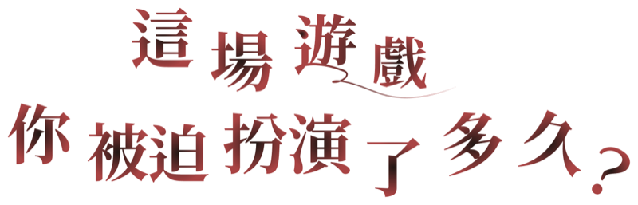
有些話看似關心
卻讓人一步步失去拒絕的自由
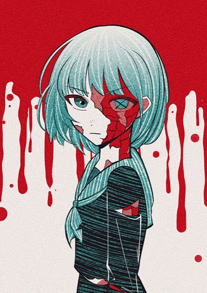
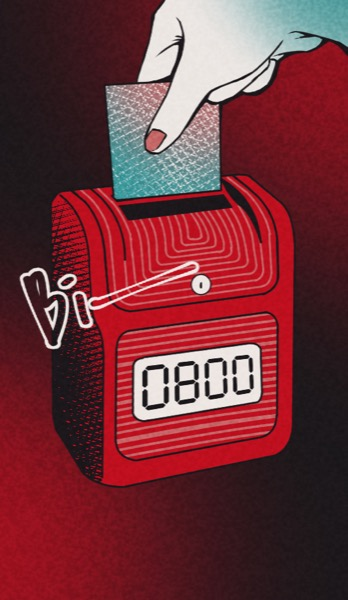
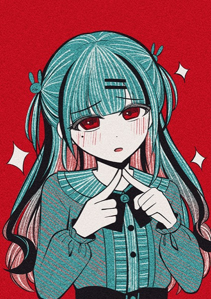
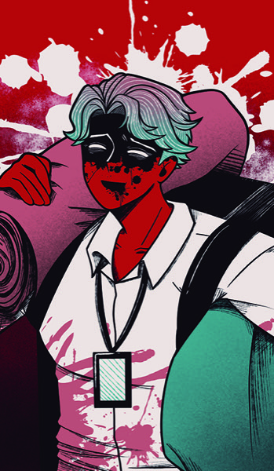
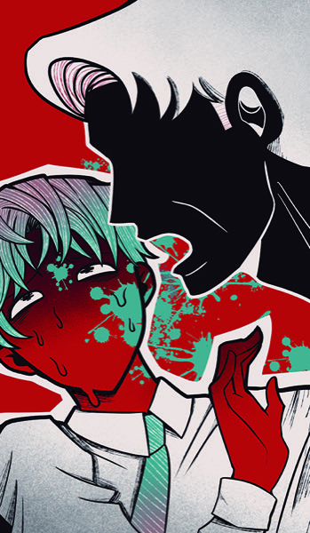
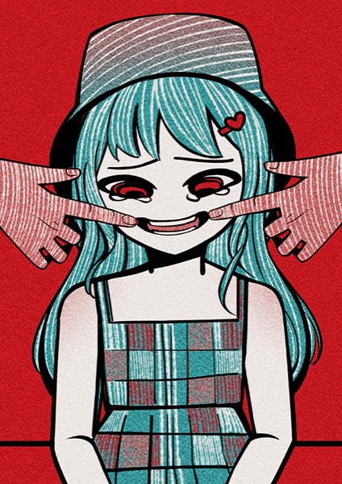
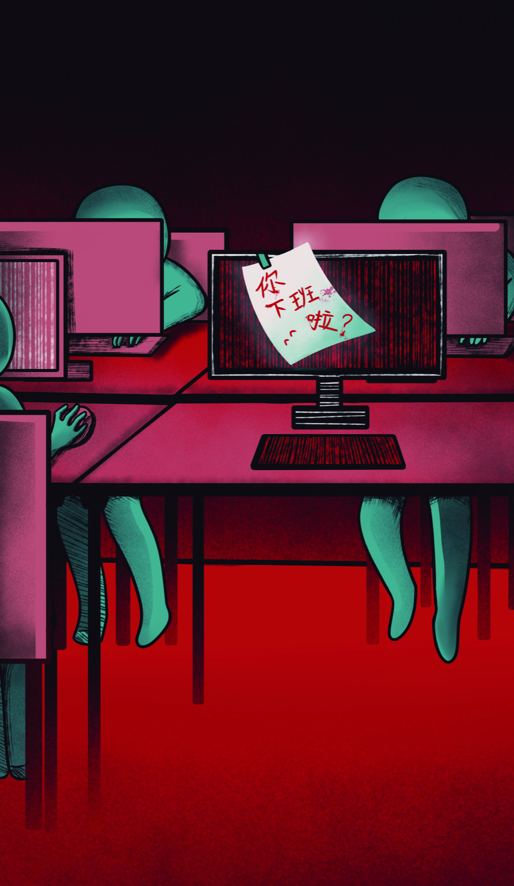
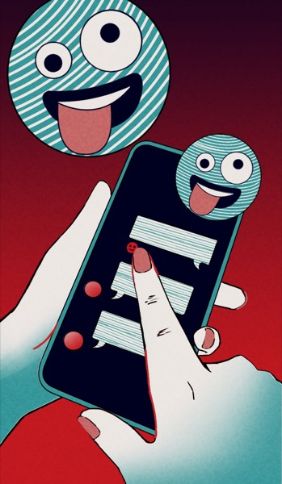
情緒勒索不一定伴隨大聲威脅。當關心、責任與罪惡感被用來迫使一個人順從， 原本平等的溝通便可能變成無法拒絕的交換。
「我們養你這麼大，你怎麼可以不聽話？」
「如果你真的愛我，就不會拒絕我。」
「這點忙都不幫，還算什麼朋友？」
「大家都在努力，你怎麼好意思準時下班？」
重點不只是對方說了什麼，而是你是否能在關係中安全地表達不同意。
識別情緒勒索的 F.O.G. 迷陣
F.O.G. 描述一個人如何在恐懼、責任與罪惡感中失去判斷空間。 辨識它，不是為了替誰貼上標籤，而是讓自己重新擁有選擇。
「你如果敢走，我們就完了」
利用你的不安，你不是不想拒絕，你是「不敢」
「我養你這麼大，你這點忙都不幫？」
利用你的善良將他的需求包裝成你的「義務」
「沒關係，反正我就是沒人愛」
利用你的愧疚扮演受害者，讓你覺得「都是我的錯」
一次妥協不一定代表情緒勒索；值得留意的是，要求、施壓與順從是否逐漸成為固定循環。
這通常不是「詢問」，而是「命令」
你覺得哪裡怪怪的，試著婉拒
對方開始跳針：「你變了」
如果不順意，後果很嚴重
為了停止爭吵，你投降了
對方學會了，下次繼續
不必急著給出完美答案。先為自己爭取一點時間，再分辨感受、需求與可以接受的界線。
別急著回話！
深呼吸，像個局外人
堅定地守住底線
界線不等於推開對方，而是清楚說明自己能接受什麼，以及接下來會怎麼做。
DRAG TO ROTATE 拖曳方塊旋轉查看
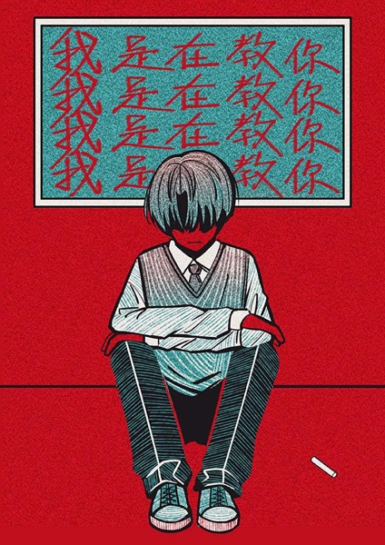
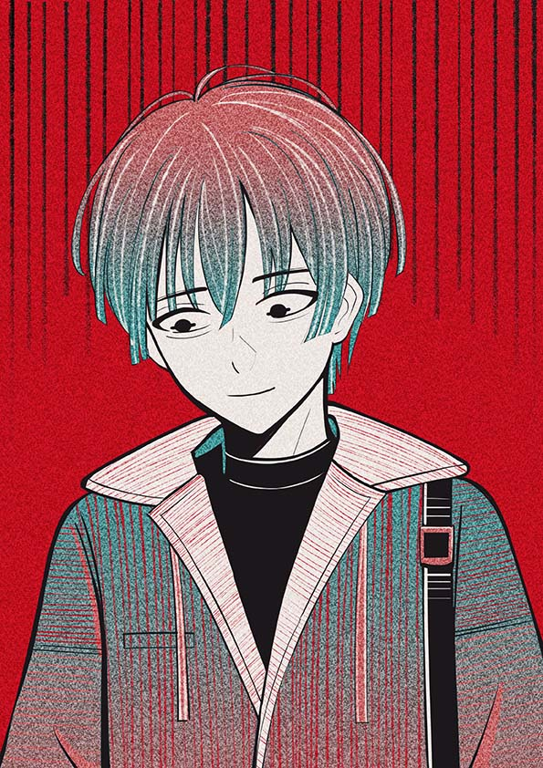
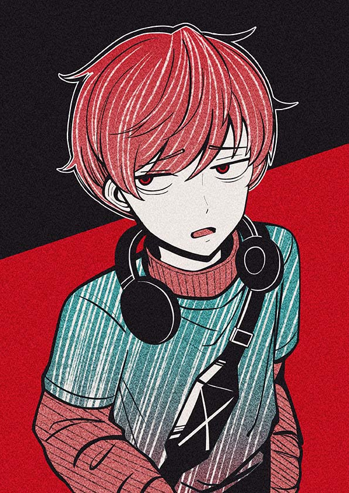
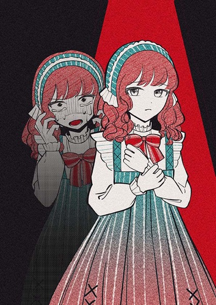
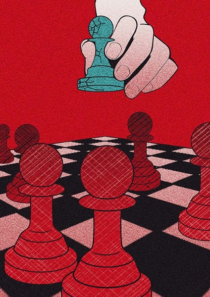
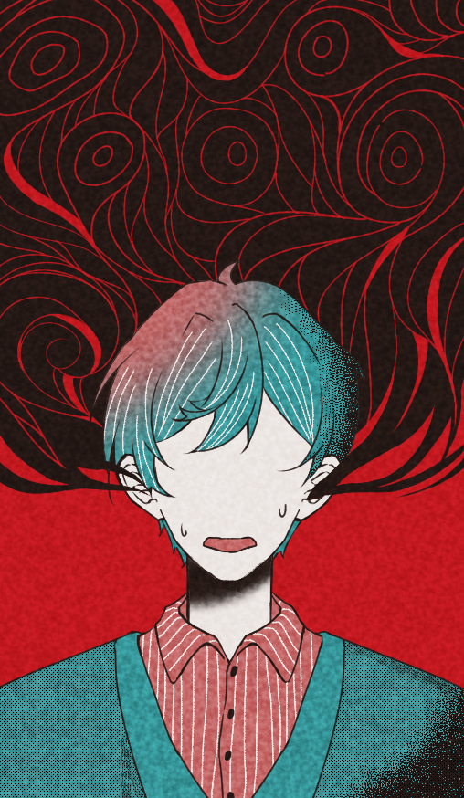
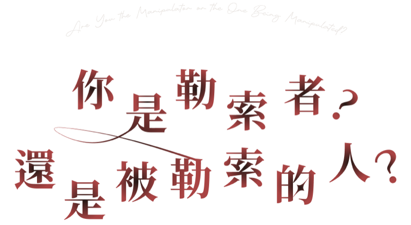
測驗提供自我覺察線索，不是心理診斷，也不將任何人固定成單一角色。
由團隊共同完成畢業製作的企劃、視覺與互動體驗。
F.O.G. 與情緒勒索循環概念參考 Susan Forward 與 Donna Frazier 的《Emotional Blackmail》。
辨識並不是為了責怪誰，而是讓我們在下一次熟悉的對話出現時， 多一點停下來的空間，也多一種回應的選擇。
重新走一次體驗 ↑